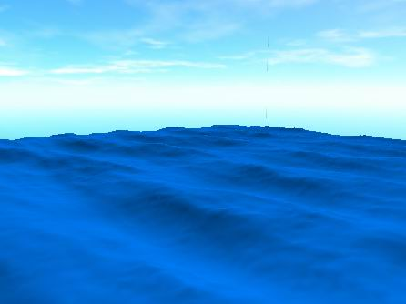
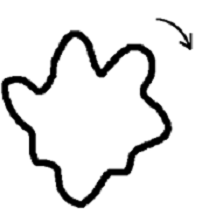

Graphics
Assets
Management
By Alexander Valencia
22 мая 2003

Основные принципы, используемые при разработке алгоритма генерации волн были следующие:
Данный алгоритм был разработан и представлен в виде демо. За счет интерференции различных волн с различными амплитудами, скоростями и волновыми числами образуется эффект «наползания» волн друг на друга, «скатывания» волн и др.

Однако, после составления того как был составлен vision игры, волны уменьшили, сетку сделали грубой и мелкие детали на волнах стали неразличимы. Осталась только общая форма волн. Все это было сделано регулировкой параметров (коих великое множество), и если будет необходимо возвратить исходную форму волн, то это всегда можно сделать.
До этого мы рассматривали только фиксированную сетку с вертикальными изменениями, однако, после наложения текстуры (о текстурах будет сказано позднее), стало необходимым производить движения в горизонтальной плоскости.
Движения в горизонтальной плоскости совершаются каждой вершиной вокруг своей изначальной позиции по окружности с постоянно меняющимся радиусом (радиус то уменьшается, то увеличивается, что позволяет движению «сжиматься» и «разжиматься»), радиус является разным для каждой вершины и выбирается случайным образом в заданных границах. Скорость вращения, как и направление (по часовой или против часовой стрелки) также выбирается случайным образом для каждой вершины. Границы увеличения/уменьшения радиуса выбираются каждый раз случайно, что позволяет сделать движение более хаотичным, оставив в нем достаточную равномерность.

Для создания береговой линии производится интерполирование волновой сетки в определенном направлении для выведения высоты в 0 и создания «наползания» волн на берег.
На поверхность воды кладется анимированная текстура, состоящая из 16 кадров. Этой текстурой создаются мелкие детали на поверхности воды.
Также на поверхность воды кладется текстура с «барашками» (анимированная, 16 кадров). Текстура с «барашками» существует всегда, но альфа для нее задается на вертексах в зависимости от высоты. Тем самым «барашек» появляется только на верхних точках волн (гребне волны). Анимация позволяет задавать движение волны и ее «закрутку».
Текстура с «барашками» двигается синхронно относительно движения волн.
На берег дополнительно кладется несколько слоев текстур для создания эффекта «накатывания»/«откатывания» волн с художественной точки зрения. Для этого используется текстура (неанимированная) для которой задаются специальные параметры движения.
При «накатывание» волны текстура скалируется от меньшего к большему, равномерно меняя alpha составляющую и, тем самым, меняется от полностью прозрачной к полностью непрозрачной.
При «откатывании» волны текстура не скалируется, а сдвигается от берега к морю меняя свою прозрачность.
Текстуры с прибрежной волной чередуются с некоторым случайным шагом. Использование нескольких слоев позволяет добиться эффекта наползания прибрежных волн друг на друга, а изменение прозрачности позволяет добиться правильного эффекта при этом.